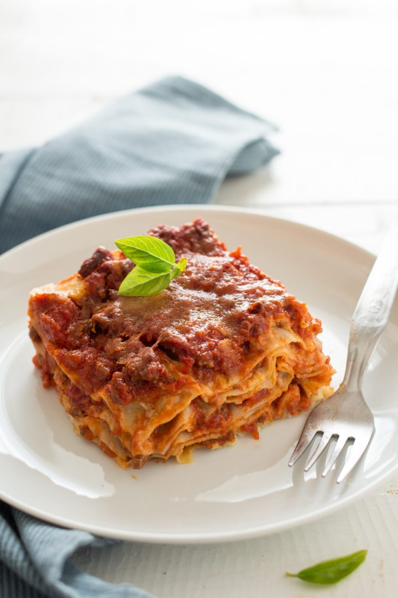

Pizza

Ingredients
Flour
Water
Tomato Sauce
Mozzarella Cheese
Basilic
Step
Mix flour and water and remain for 8 hours.
Flat and add tomato sauce and mozzarella.
Bake for 20 min 200° then put basilic and serve.